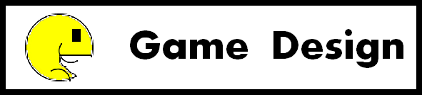

Swell! or Shrink!
2D 게임 장르 : 횡스크롤 퍼즐 게임
- 사용 엔진 : Zero Engine
- 사용 언어 : Zlich Script
- 플랫폼 : Windows
- 마일스톤 : 프로토타입
High Concept
“Swell! Or Shrink!” 는 2D 횡스크롤 퍼즐게임입니다. 플레이어는 공을 크게할지 작게할지 선택해야만합니다. 목표를 달성하기위해서 공의 크기는 항상 조절되어야만합니다.
Summary
플레이어는 특정한 물체와 상호 작용하면서 크기가 바뀌는 공을 조정할수 있습니다.
좌우 방향키로 공을 움직이고 스페이스바로 점프 할수 있습니다.
승리 조건은 공이 터지지않게 크기를 조절하면서 목표 지점에 도달하는 것입니다.
크기를 조절해야만 통과할수 있는 구간이 존재하기 때문에, 플레이어는 계속 공의 크기를 조절해야합니다.
Game Mechanics
Characters.
공은 플레이어의 동작에따라 자신의 크기와 색깔을 바꿉니다. 게임 안에서 크기에 따라 상호 작용하는 많은 믈체들이 있습니다.
포스트모템 TEAM 人
개발 팀
승국과 범근은 대학교 기숙사에서 처음으로 만났습니다. 서로 함께 살면서, 우리는 수학,프로그래밍,게임 아이디어등 다양한 지식을 공유했습니다. 우리는 서로의 장점을 알아보았고 이를 통해 게임 팀(team 人)을 만들었습니다. 승국은 메인 코딩을 맡았고 범근은 게임 디자인을 맡았습니다.
툴
제로엔진 – 교육용 게임 엔진프로그램.
Articon – 아트 에셋 제작용 프로그램
잘된 점
1.간단함
“Help Me!” 와 “Swell! Or Shrink!”는 플레이하기 매우 쉽습니다. 플레이어 라이프가 없으면 패배하고 플레이어가 특정위치에 도달하면 승리합니다. 이와같이 승리조건과 패배조건이 매우 간답합니다. 대부분의 플레이테스트에서 모든 게임을 플레이한 사람들이 게임을 쉽게 클리어했습니다.
2.효율적인 시간 관리
저희 팀은 정확한 시간을 정하여 게임을 만들었습니다. 이 시간동안에는 우리는 게임을 만들기에만 집중하였고, 이러한 과정을 통해서 저희 게임은 점진적으로 성장할수 있었습니다. 이러한 효율적인 시간관리덕분에, 다른 분야의 공부도 쉽게 할수 있었습니다.
3.플레이테스트
게임을 어느정도 개발한 후에, 우리 팀은 랩실에서 자주 플레이 테스트를 진행했습니다. 플레이테스트를 통해서 많은 피드백을 받았고, 이런 피드백들은 저희 게임의 퀄리티를 증가시켰습니다.
4.분업화
저희팀은 팀 맴버의 특성을 고려하여 역할을 잘 나누었습니다. 승국은 코드 작성에 능숙했고 범근은 전체의 프로젝트를 관리하는데에 능숙했습니다. 이러한 특성을 고려하여서, 승국은 메인 코딩을 맡았고, 범근은 게임 디자인과 전체적인 팀 스케줄을 관리했습니다. 팀의 분업화는 게임 개발속도를 좀 더 빠르게 진행시켰습니다.
5. 순조로운 의사 소통
우리는 같은 기숙사에 살았기때문에, 게임을 제작하는 시간이외에도, 항상 우리의 게임에 대한 의논을 할 수 있었습니다. 게임과 상관없는 주제의 이야기라도 우리는 서로의 의견을 존중했습니다.
잘 안된 점
1.게임 레벨 디자인의 부족
우리는 몇몇의 레벨을 만들었습니다 하지만 레벨들의 퀄리티가 그렇게 높지는 않았습니다. 그래서 우리는 좀 더 많은 시간을 레벨 디자인에 투자할 것이고 , 다른 게임들을 플레이하면서 좋은 레벨을 만드는 방법을 배울 것 입니다.
2.움직임의 부자연스러움
우리 게임에서 캐릭터가 땅위에 약간 떠 있거나, 플레이어가 물체사이에 끼인다거나 하는 버그가 종종 발생합니다. 이러한 문제를 해결하기 위해서 임시 방편으로 몇몇의 변수를 조금씩 조절해야만 했습니다.
3.게임 플레이의 대한 설명의 부족
약간의 텍스트를 맵위에 적어서 어떻게 우리의 게임을 플레이하는지를 설명했습니다. 하지만 대부분의 플레이어들은 텍스트를 주의깊게 읽지않았습니다. 그래서 다음에는 플레이어가 어떻게 플레이하는지를 알게되면 게임을 진행 할수 있게 만들 것 입니다.
4.프로젝트안의 불필요한 데이터들
게임을 제작하면서, 우리는 실제로는 필요없는 에셋들을 많이 다운 받았었습니다. 그래서 많은 시간들이 로딩에서 낭비되었습니다. 이러한 문제를 해결하기 위해서 다음에는 필요없는 무언가가 생기면 즉시 삭제할 것 입니다.
5. 정리되지않은 이름들과 코드들
게임을 제작하는 동안 우리는 많은 게임 오브젝트들을 만들었고 많은 스크립트들을 작성하였습니다. 하지만 우리는 오브젝트들의 이름과 스크립트들의 내용들을 즉시 정돈하지 않았습니다. 그래서 게임에서 버그들을 찾고 고치는데에 매우 힘들었습니다. 다음번에는, 가능한 빨리 게임안의 콘텐츠들을 정리할 것 입니다.